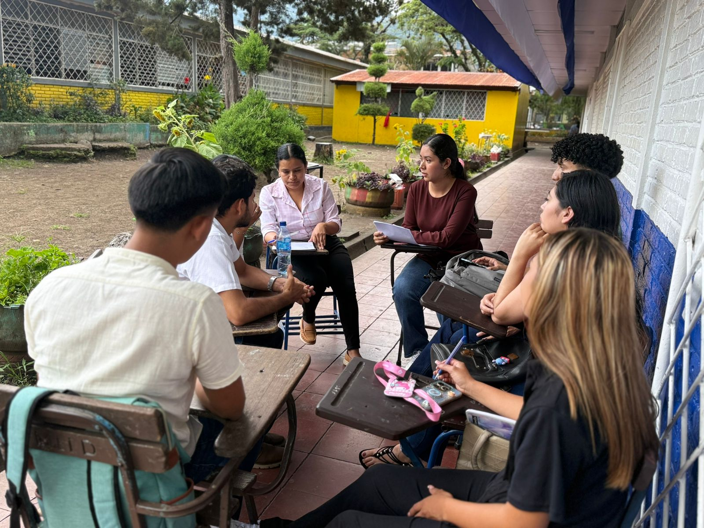
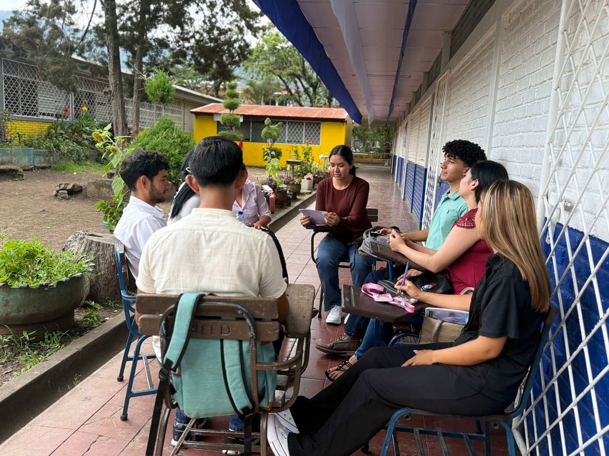

Characterize the neuroeducational techniques best suited to self-directed English learning.
Neuroeducational techniques for learning English on your own
- 2025
- Neuroeducation and research protocol
Which neuroscience-based strategies help UNAN-CUR Jinotega students study English independently.

Objective
Key findings
The challenge is one of method, not ability
Listening, pronunciation, and grammar are the most difficult areas.
Three techniques stand out
Multisensory learning, spaced repetition, and visual organizers.
Project impact
Students interviewed
Techniques characterized
Proposal for UNAN-CUR Jinotega
Skills developed
Applied neuroeducation
Design of study strategies based on neuroscientific evidence.
Qualitative research
Semi-structured group interviews and Grounded Theory.
Literature review
Systematic analysis of recent academic sources.
Academic writing
Writing a complete research protocol.
From protocol to teaching practice
This is how each neuroeducational technique connects with real teaching tasks.
Neuroeducational techniqueTeaching practice
The connections draw themselves, one technique at a time. You can also tap a technique to see only its own.
Activity design and teaching materials are the practices with the most connections.
Group interviews


Credits
Tania Karina Alemán Díaz
Author · UNAN-León
Nohelia Massiel Cáceres Gutiérrez
Author
Lic. Haris López
Advisor
National Autonomous University of Nicaragua, León — Regional University Center Jinotega, 2025.